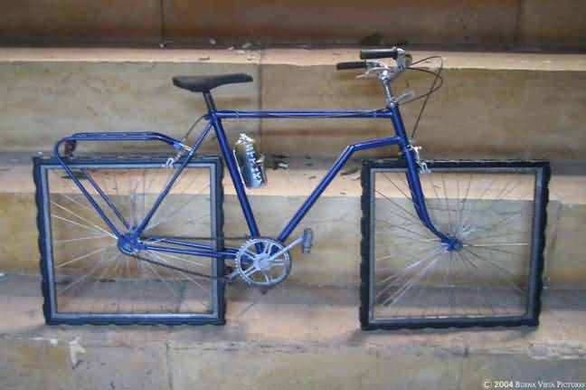

Part 1: a simple article implementation
I just realized our full Computer Architecture book is online and free [1]... did you know?

Some filler text goes here
A tip for you
It can be useful to use a div with .box and .note and
.good classes.
Part 2: remember to make it appealing
There are many bulding blocks ready for you. Check them out in the demo page
A div is more useful thank you think. Here's one with a table inside!
| John | Mike | |
|---|---|---|
| Net worth | Not much | A gazillion |
| Comparison | Poorer | Richer |
Sources
- Andrew S. Tanenbaum. Structured Computer Organization. Year 2012. book.pdf